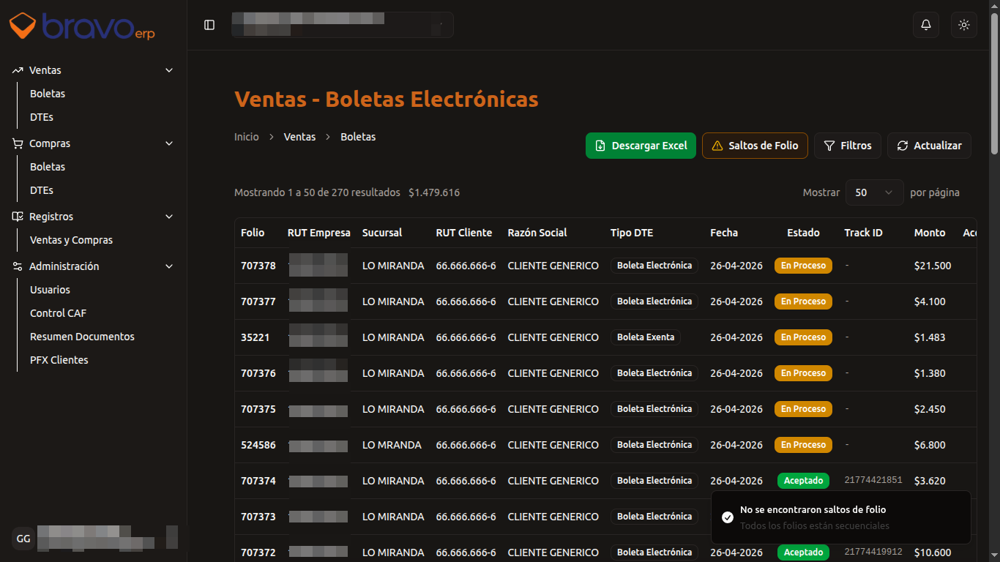
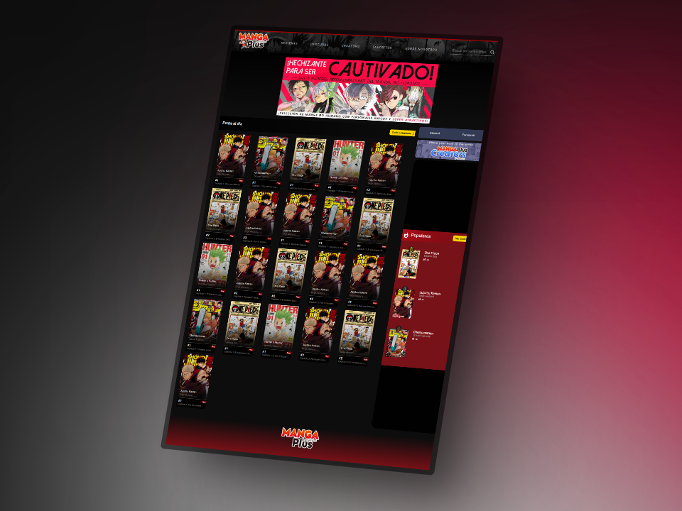
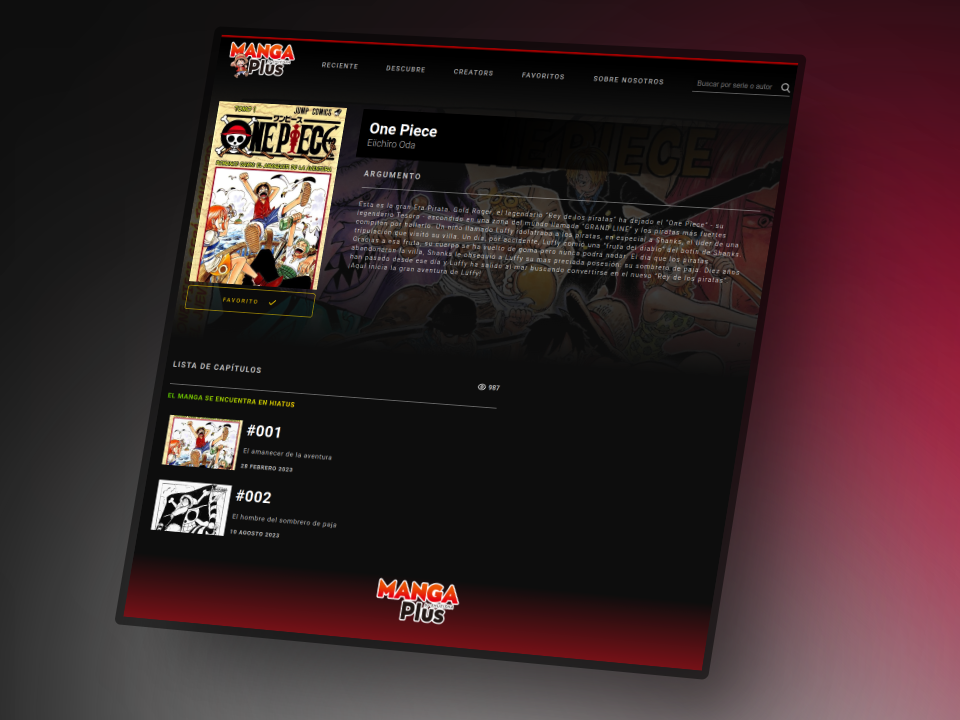
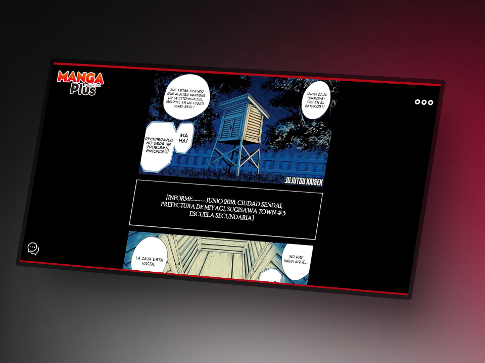

Mi fascinación por el código y el desarrollo de productos comenzó de manera inesperada: intentando modificar un juego de PlayStation sin conocimientos previos. Al ejecutar un programa que revelaba el contenido del disco, quedé cautivado por ese universo de texto y caracteres desconocidos. Hoy sé que aquello que despertó mi curiosidad estaba escrito en C++.
Como desarrollador Fullstack de 30 años, combino pasión y técnica para construir soluciones digitales que impulsan negocios. He creado aplicaciones y sitios web que se convierten en un verdadero diferencial para mis clientes. Mi día a día es un viaje de aprendizaje constante, materializando cada día aquello que alguna vez solo imaginé.
Migré una arquitectura monolítica con bases de datos unificadas a un modelo multi-tenant con más de 40 clientes reales en producción. Diseñé un middleware que, según el cliente asignado al usuario, redirige automáticamente a su base de datos específica, evitando crecimiento exponencial de datos y asegurando la integridad de los mismos. Implementé un sistema de 3 niveles de rol que permite al equipo de soporte visualizar y operar como cualquier cliente sin necesidad de cuentas separadas, reduciendo el tiempo de resolución de incidencias en más de un 60%. Desarrollo de visualización de compras y ventas con agregación mensual, utilizado diariamente por equipos contables de múltiples sucursales. Vue 3 (Composition API), TypeScript, Laravel 11, MySQL y TailwindCSS.
Desarrollé un sistema para automatizar procesos de gerencia a nivel regional, en respuesta al Decreto Presidencial de Copago Cero, entre otros. La plataforma permitió gestionar la validación masiva de datos con estándares exigidos por el gobierno. Implementé autenticación segura, carga y validación de archivos estructurados. Esto redujo procesos manuales que antes tomaban horas de procesamiento. C#, .NET, SQL Server y JavaScript.
Encargado de la migración completa de un sistema Symfony a Laravel, incluyendo la reconstrucción de interfaces con Blade y CSS personalizado. El proyecto implicó replicar funcionalidades críticas sin interrupción del servicio, asegurando la continuidad operativa del negocio. Stack: Laravel, Blade, SCSS y MySQL.
Identifiqué y resolví cuellos de botella críticos en consultas SQL y en el código JavaScript del lado del cliente. Mediante refactorización y optimización de consultas Eloquent, logré reducir los tiempos de carga de módulos clave, mejorando la experiencia de usuarios finales en operaciones diarias. Stack: Vue.js, Laravel, Node.js, Nest.js, MySQL y MongoDB.
Plataforma para la visualización de Documentos Tributarios Electrónicos (DTE), para los sistemas de caja de múltiples sucursales. Un sistema crítico para la trazabilidad fiscal y financiera.
Implementé un middleware que dependiendo del cliente seleccionado apunta automáticamente a su base de datos específica, permitiendo aislamiento y escalabilidad.
Administración de usuarios con roles.
Visualización de compras y ventas totales con agregación mensual.
Frontend: Vue.js 3 (Composition API), TypeScript, Fetch API, TailwindCSS.
Backend: Laravel 11, MySQL, Eloquent ORM.
🔗 Demo: dte.bravoerp.com

Un clon funcional de MangaPlus, una plataforma moderna para la lectura de mangas en línea. Este proyecto demuestra un flujo de trabajo fullstack completo:
Frontend: Construido con Vue.js 3 (Composition API), TypeScript para tipado seguro, Axios para peticiones HTTP y SCSS para estilos avanzados.
Backend: API robusta desarrollada con Node.js 18, TypeScript, Express, MongoDB, Mongoose y Cloudinary para la gestión eficiente de imágenes.
Despliegue: Backend alojado en Railway y frontend en Netlify, aprovechando sus capas gratuitas para un rendimiento óptimo.
🔗 Demo: MangaApp


